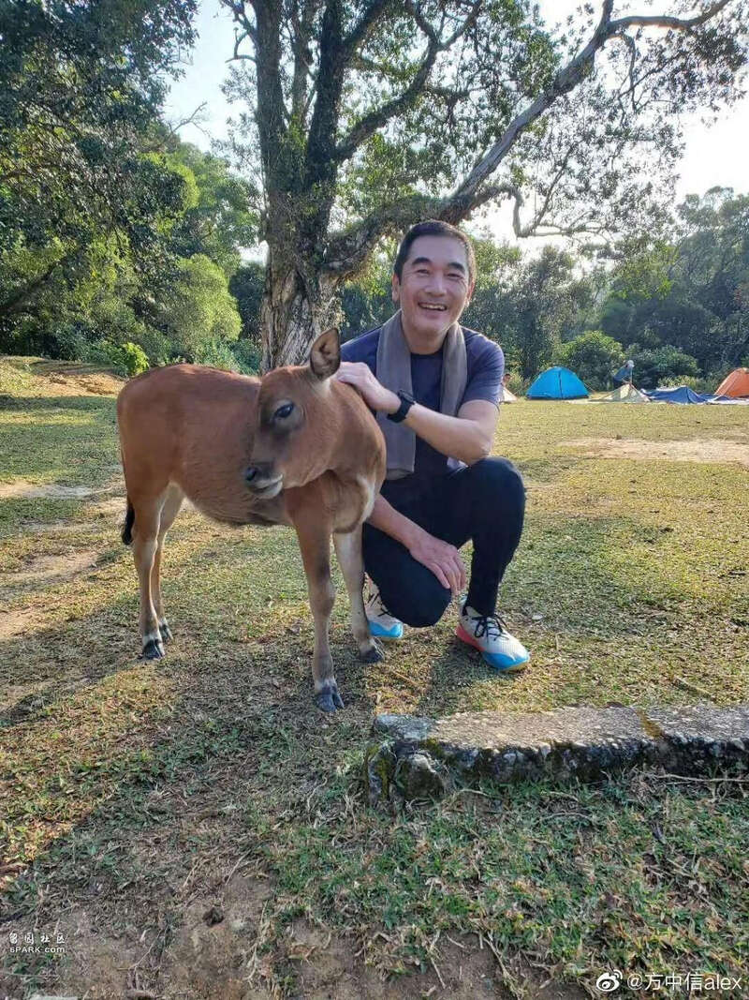
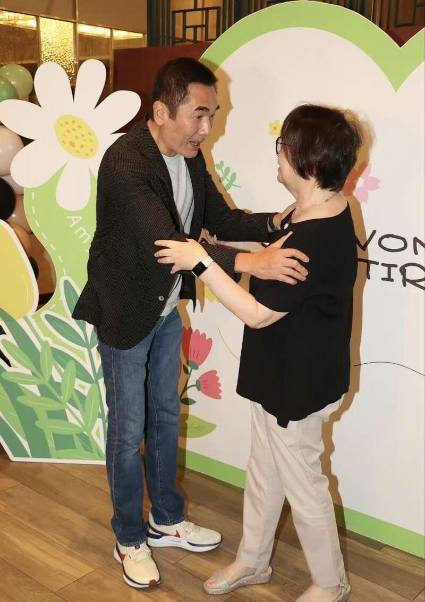
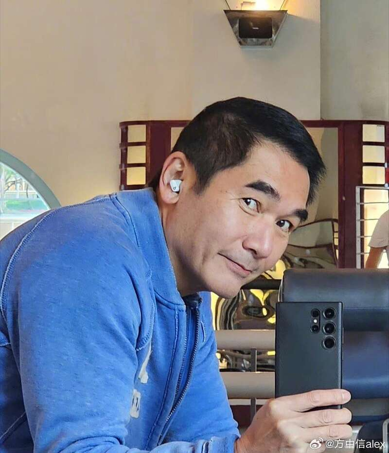
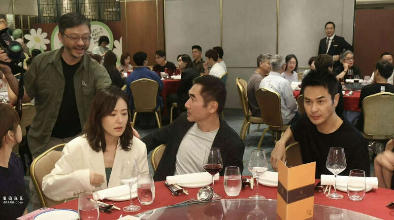
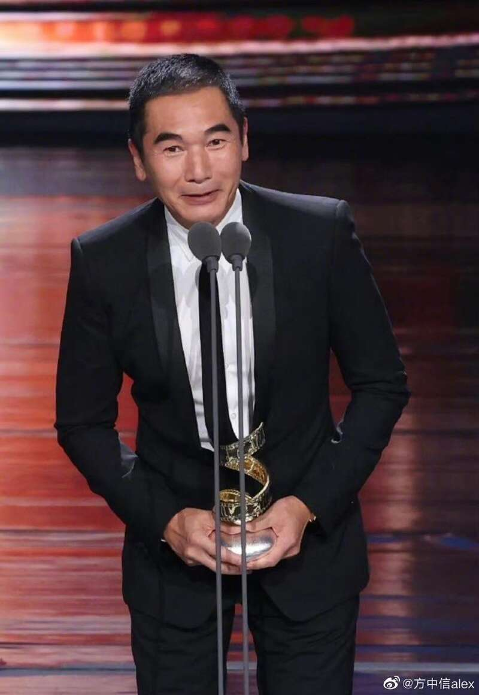
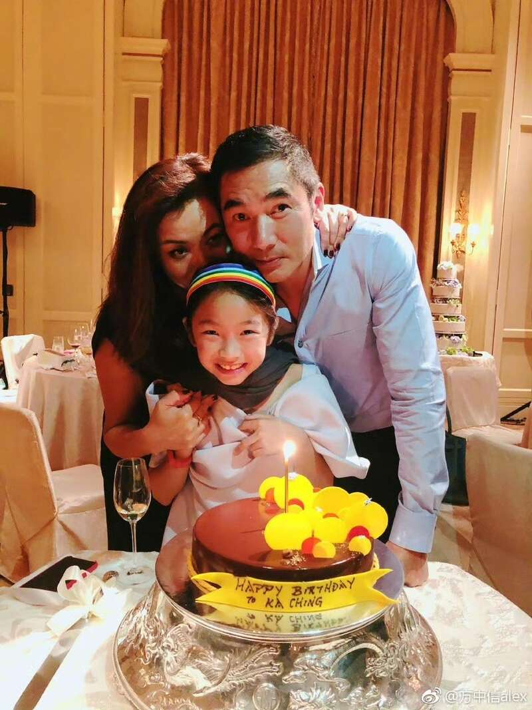
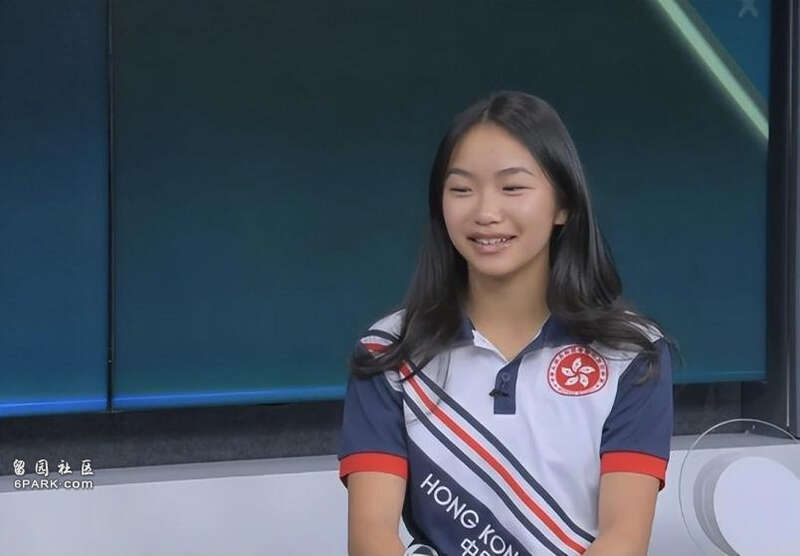
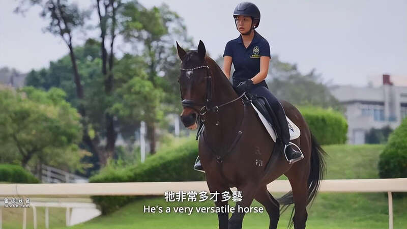
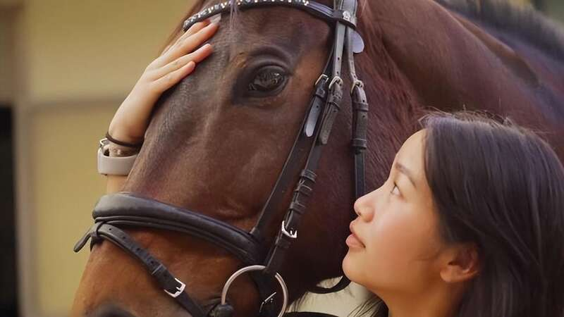
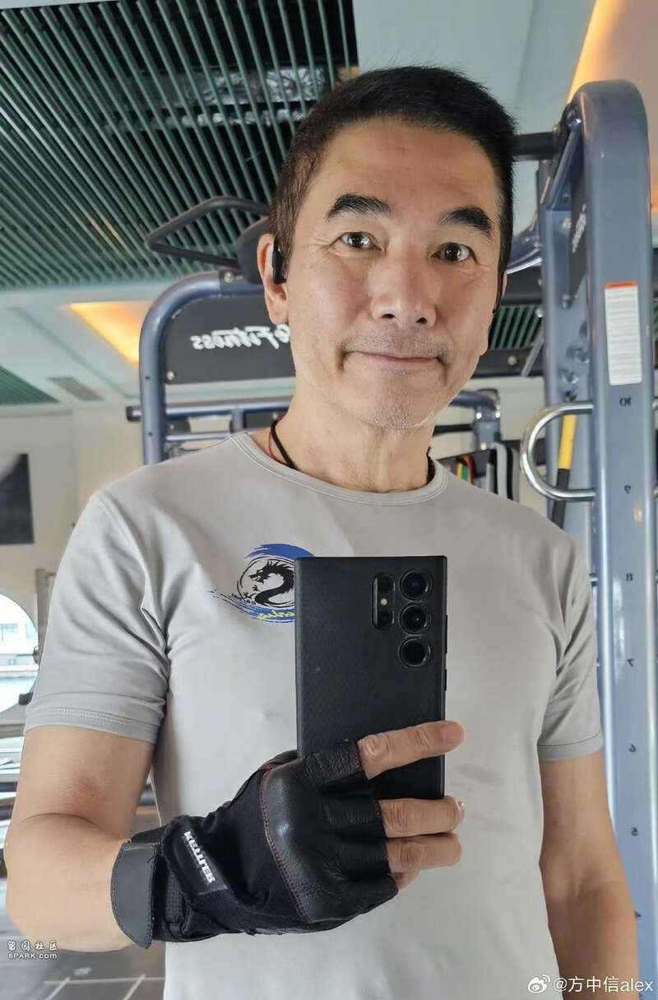

港圈男神方中信近年虽然作品不断，但是人气却不似从前，61岁的他原本也到了退休的年纪，可至今仍没有淡出圈的想法，看来对于表演，他仍非常有兴趣。

近日，方中信现身TVB金牌监制王心慰的荣休晚宴，曾与对方和多次合作的方中信听到王心慰退休，虽然心中有些不舍，但是也发自内心的为其开心，因为这样一来，王心慰可以有更多的时间陪伴家人。

当天现身方中信穿的很随意，牛仔裤搭配深色的西装外套，整个人看起来松弛感满满，虽然方中信已经超过六十岁了，但是身材完全没有走样，据说这与其私下的运动习惯有很大的关系，熟悉方中信的观众都知道，他除了喜欢在健身房举铁外，还经常跟着周润发跑步，难怪身材保持的这样好。

晚宴上方中信与王心慰交谈了许久，作为其伯乐兼多次的合作对象，王心慰对于方中信也是有很高的评价，所以目前比较遗憾的是不能够与对方再合作。

入席后方中信也是和身边的艺人相谈甚欢，始终大家都是旧同事，在TVB的时候也是有过合作，因此难得见到他们，方中信也是打开了话匣子。
晚宴结束后方中信接受了媒体的访问，他言谈间对王心慰赞不绝口，而其身旁的姜大卫也是非常认同方中信的说法，还表示或许将来王心慰心痒痒会回来继续拍剧，但现阶段还是希望她可以休息一下，毕竟辛苦了这么多年。

方中信对于将来收到大台邀约是否会回巢助力，他一口应允，称大家曾合作的很愉快，而且只要有好的剧本，其他都不是问题，相信高层听后也是很开心，如果有可能的话，大台赶紧计划一下与方中信的合作吧！

明明到了退休的年纪，方中信还这么卖力，他解释自己之所以一直做下去，与女儿符迦晴有不可分割的关系，毕竟女儿十六岁了，还没有毕业出社会工作，还需要他这个做父亲的继续承担养家的重任。

最重要的是，女儿学习马术，每年的学费也是相当高，用方中信的话说，女儿小时候骑小马，大一点就开始骑越来越大的马，还越骑越贵，自己若不继续赚钱，又怎么能够支撑女儿的兴趣呢？

此外，方中信称，女儿还不如学习击剑，今年奥运会上张家朗、江旻憓的成绩相当好，证明击剑是很有前途的，总好过一直待在马背上。
说归说，但方中信还是非常支持女儿的兴趣的，加上小家伙本身的成绩就很好，在马术比赛上也是多次获得名列前茅的好成绩，这让方中信与妻子莫可欣非常自豪。

而且为了培养女儿，莫可欣已经早早的退圈，专门照顾女儿的起居，看来对于这个独生女，方中信夫妇真的花了很多心思。

虽然当年二人坚持不婚，但是女儿的意外降临还是打破了他们夫妻的约定，而方中信也是成为一个负责任的好爸爸，难怪女儿平日里很爱黏着他。
Advertisements